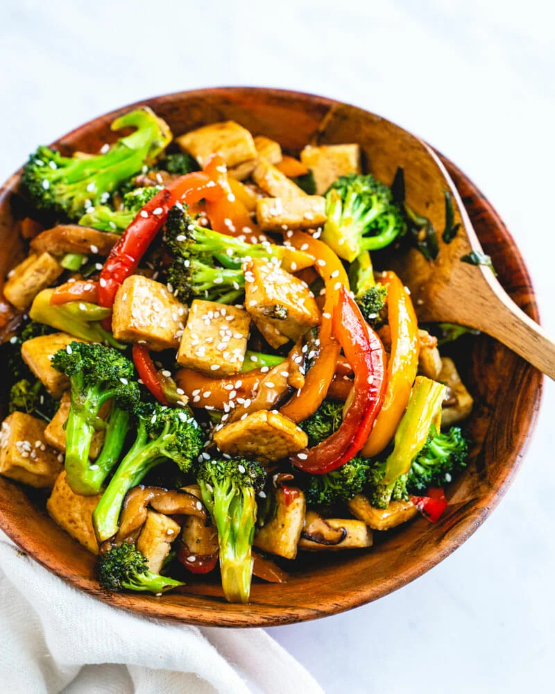

Tofu Stir Fry Recipe

Description
This tofu stir fry dish is an excellent choice for a healthy, well balanced vegetarian meal. Serve this dish with a whole grain such as quinoa or rice to make it more filling and complete your dinner!/p>
Note: This is not my recipe. This page was made for the purpose of practicing web design. Here is the original recipe.
Ingredients
For the stir fry sauce
- 1/4 cup soy sauce
- 6 tablespoons water
- 1 tablespoon rice vinegar
- 2 tablespoons sugar
- 1 tablespoon yellow or white miso paste
- 2 teaspoons cornstarch
- 1/4 teaspoon garlic powder
For the tofu stir fry
- 1 1/2 pounds fresh brocoli, stem on (about 3 large heads or 6 heaping cups florets)*
- 1 red bell pepper (or half red and half orange)
- 4 ounces shitake mushrooms (optional)
- 2 green onions
- 1 tablespoon grated fresh ginger
- 14 ounces firm or extra firm tofu
- 3 tablespoons sesame oil, divided
- kosher salt
- sesame seeds
Steps
- Start the rice/quinoa: If serving with a grain, start it now.
- Make the sauce: Whisk together the stir fry sauce ingredients in a medium bowl, or make the sauce in advance and refrigerate until cooking.
- Chop the veggies: Chop the broccoli into florets. Thinly slice the pepper. Remove the shiitake stems and thinly slice them, if using. Thinly slice the green onion. Peel and grate the ginger.
- Cook the tofu: Cut the tofu into bite sized pieces (1-inch squares, 3/8-inch thick and pat it dry with a towel. Add 2 tablespoons sesame oil to a large non-stick pan and add the tofu cubes and a few pinches of kosher salt. Turn on the heat to medium-high. Cook 5 to 6 minutes until browned. Remove the tofu to a bowl and set it aside.
- Stir fry the veggies: Add the remaining 1 tablespoon oil to the skillet. Add the brocoli, pepper, and shiitake mushrooms and two pinches salt and cook 6 to 7 minutes until just starting to brown on edges, stirring occasionally. In the last minute, add 1 tablespoon water and allow the vegetables to steam.
- Turn down the heat to low. Add the green onion and ginger and cook 1 minute. Turn off the heat. Add the tofu and sauce and stir until the sauce thickens. Garnish with sesame seeds if desired. Serve immediately. Store leftovers up to 3 days refrigerated.